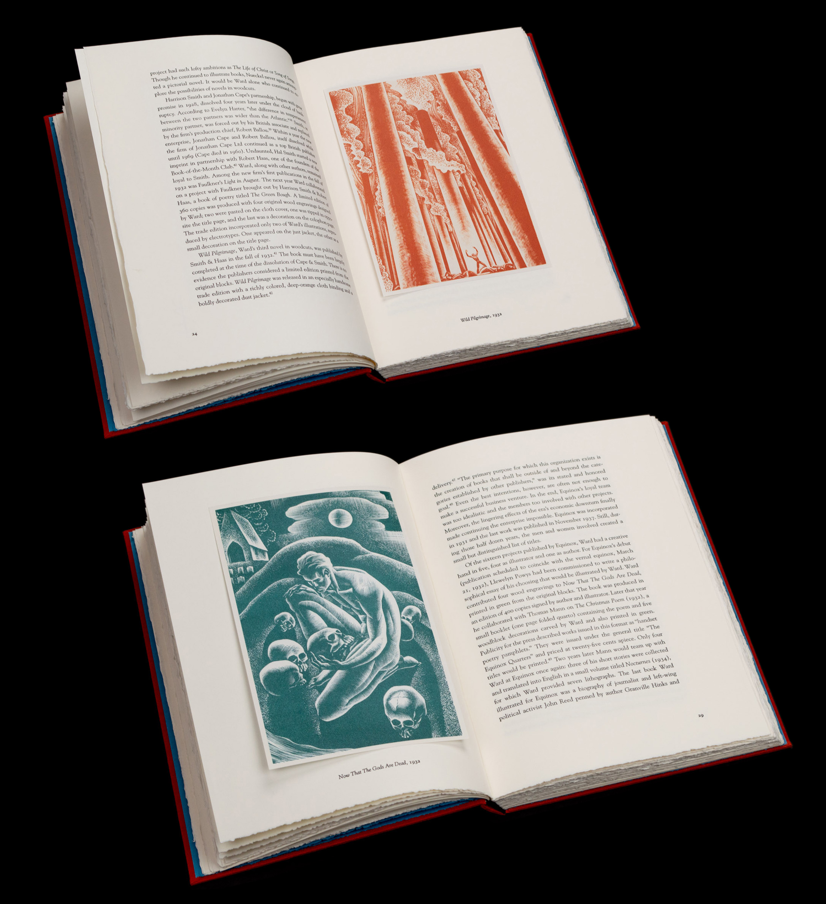

“Illustrated by Lynd Ward” letterpress-printed book
This book by Robert Dance, in tandem with the Grolier Club exhibition, introduces the 20th-century American illustrator known for his wordless novels in woodcuts. It is the first attempt to compile a comprehensive checklist of Ward’s published work.
As assistant designer and printer to Margery Cantor, our early meetings revolved around choosing typefaces, which for an audience of bibliophiles is a research-driven process. Ms. Cantor was drawn to the work of Frederic Goudy, whose type designs were not only of Ward’s time and place but were also drawn freehand, reinforcing the centrality of the artist’s hand in Ward’s practice. After receiving the final manuscript, we commenced typesetting: I was instructed in fine-tuning the hyphenation and justification and asked to correct pdf proofs for typographic errors. Soon, we would be cutting the polymer plates to size and constructing an imposition dummy in preparation for printing.
The printing process began by adhering the polymer plate to the press bed. I would pull a proof, measure the placement of the text, and adjust the plate until the baseline was perfectly registered. As I became acquainted with operating the Asburn flatbed press, I found that letterpress printing requires a precise choreography. To print each spread, I would place a sheet of paper on the tray, my foot momentarily on the pedal to secure it beneath the grippers. I would swiftly turn the handle of the cylinder, dancing down the length of the press, keeping the most constant speed possible in order to meet the publisher’s exacting standards.

Robert Dance, “Illustrated by Lynd Ward”
Published in 2015 by The Grolier Club (New York)
and the Impermanent Press (Norwich, Vermont)
Lead Designer and Printer: Margery Cantor
Assistant Designer and Printer: Daniel Goldberg
Polymer plates made by Boxcar Press (Syracuse, New York)
Illustration files prepared by Stinehour Editions (South Lunenburg, Vermont)
Tip-in illustrations printed under the supervision of Stephen Stinehour
at Puritan Capital (Hollis, New Hampshire)
Binding by Judi Conant (Maidstone, Vermont)
Printed in an edition of 85 copies with 75 for sale.